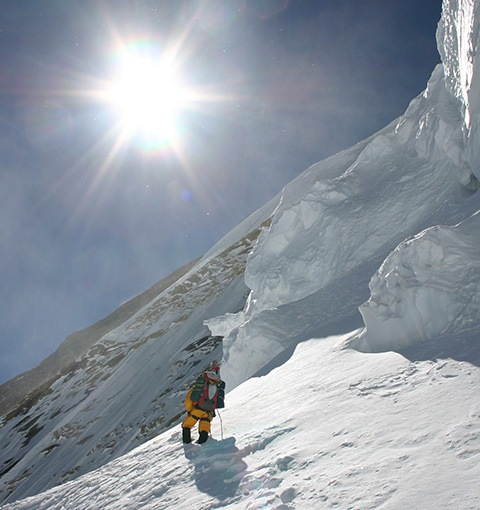
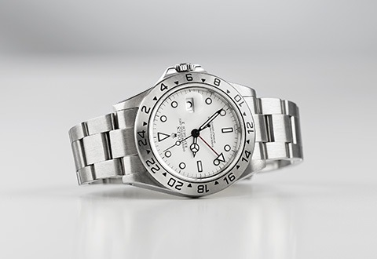

一只劳力士，一个故事
艾德・维思特斯
艾德・维思特斯（Ed Viesturs）是史上少数不使用补氧装备，登上全球所有十 四座8,000米（26,000英尺）高峰的登山家及唯一一位美国人。2005年，维思特 斯攀上第14座山峰安娜普娜峰（Annapurna），成功征服这座全球最险要的山 岳，获颁授国家地理学会年度探险家奖（Adventurer of the Year）。总括而 言，维思特斯佩戴蚝式恒动探险家型 II，共21次登上超过8,000米的耸山峻岭， 其中更7度踏足珠穆朗玛峰。
“人生其中一件最愉快的事，莫过于
达成目标，当你攀上巅峰，便会明白
之前的准备工夫并没有枉费。”
人生其中一件最愉快的事，莫过于达成目标，当你攀上巅峰，便会明白之
前的准备工夫并没有枉费。这种成就感令人欲罢不能，因为它使你感到兴
奋，吸引你再次投入这种感觉。我已7度登上珠穆朗玛峰，每次的感受亦不
尽相同。你会希望永远停留在此，却没法做到。
起初，我只视登山为兴趣，而非职业。后来我登上首三座8,000米高峰──
珠穆朗玛峰、乔戈里峰（K2）及干城章嘉峰（Kangchenjunga）──发现
自己已经攀登了地球上最高的三座山峰，便想何不征服全部14座：“我已
完成三座，只剩下11座。”我下定决心，并将计划名为“力登
8000”（Endeavor 8000）。
“力登”计划花了18年时间完成，我返回安娜普娜的山脚──登山旅程往往
在山脚结束，而非山顶──为自己的成就感到自豪，因为这是我的个人之
旅，没有人要求我这样做，是我自己决定踏上的征途。这些登山经历让我
明白，即使事件仿佛没有可能达成，只要心怀耐性及热情，总可以完成心
中所想。我深信，如果你可以回首并说：“我已达成心愿。”那你的一生
便不枉过。
准确报时非常重要。探险家的腕表必须堪当信赖，不易受损、防水、抗震
且方便使用。登山规划是旅程的一部分，但我认为最重要的是下山计划。
知道必须到达山脚的时间，便清楚回程的时间，这经常是午夜时分；若果
我仍未处于山峰，我便会按照定下的规则返回，我对此非常严谨。
“我深信，如果你可以回首并
说：‘我已达成心愿。’那你的
一生便不枉过。”
我拥有一只劳力士探险家型 II腕表，这是我于1994年完成三座8,000米高
峰所获赠的，我当时仍未想及攀上全部14座山峰。我自此每天佩戴探险家
型 II腕表，所有的登山旅程亦然，迄今仍然伴随在旁。当我攀上清单中最
后一座高峰，也就是安纳普尔峰，正是下午2时，我清晰记得那一刻，因为
我于完美时刻登上山峰，而腕表亦在我的左右。
“我自此每天佩戴探险家型 II腕
表，所有的登山旅程亦然，迄今
仍然伴随在旁。”

此腕表象征着我与它一同展开的旅程。每年，你也会因为创新、更轻、更
佳等因素，选购各种新器材。然而，你将无需更换腕表，因为它的外观
经典，功能可靠，我永不需要替代它。事实上，腕表可能是我众多登山旅程
中最重要的器材。
“每年，你也会因为创新、更
轻、更佳等因素，选购各种新器
材。然而，你将无需更换腕
表。”
在多方面而言，探险家型 II腕表助我达成目标，亦让我保持安全，因为我
在山上会基于时间下决定，若然没有准确时间，没有腕表，我或不可能生
存至今。

艾德・维思特斯的腕表
蚝式恒动探险家型 II
-

保罗.卡亚德
-

胡安・迭戈・弗洛瑞兹
-

颂娅・咏切娃
-

雅伦・休伯特
-
.jpg)
保罗.卡亚德
-
.jpg)
胡安・迭戈・弗洛瑞兹
-

颂娅・咏切娃
-
雅伦・休伯特
-

保罗.卡亚德
-

胡安・迭戈・弗洛瑞兹
-
.jpg)
颂娅・咏切娃
-
雅伦・休伯特
-

保罗.卡亚德
-
胡安・迭戈・弗洛瑞兹
-
颂娅・咏切娃
-
雅伦・休伯特
-
保罗.卡亚德
-
胡安・迭戈・弗洛瑞兹
-
颂娅・咏切娃
-
雅伦・休伯特
保罗.卡亚德
胡安・迭戈・弗洛瑞兹
颂娅・咏切娃

雅伦・休伯特